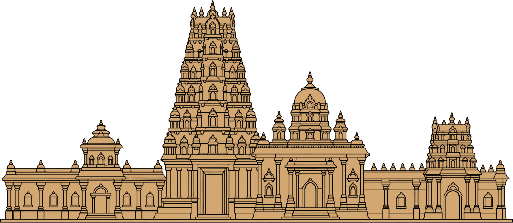

Temple Architecture
b4_wg226_261102_01
For many centuries, temples have been at the heart of India’s cultural life. They were places of worship, and also of learning, art, music and dance. Their builders followed careful rules, and planned each temple to stand for something much bigger.
Tap Start to begin your journey.
The Mystery
What shape is a temple?
Tap a body part, then tap a blank label to match it with the temple tower. Lock your guess when you are done.
0 of 7 placed
Your guess is locked.
Now walk through a temple. When you climb its tower in the next level, you will find out how close you were.
Not to scale
Temple Walk
Four temples, one idea
Different looks, a similar core. The dashed lines on each temple show what most temples share: an entrance, a hall, and an innermost shrine with a tower above it.
Temple drawings are simple outlines, not to scale.
Same plan, different styles
Compare what stays the same with what changes from region to region.
Similar in most temples
- The same main parts: an entrance, one or more maṇḍapas, and the garbhagṛiha with the mūrti, under a tower.Like the model temple you walked through
- The main alignment is generally east–west, with the garbhagṛiha facing east.Page 99
- Built by following the rules of śhilpaśhāstra, and planned like the body of Puruṣha.Pages 99 and 100
- Skilled architects, engineers and craftsmen, and a good deal of mathematics, especially geometry.Page 105
Changes from region to region
- The tower: a śhikhara in the north, a vimāna in the south.Lingarāja’s tall śhikhara; Bṛihadīśhvara’s pyramid-shaped vimāna
- The entrance: a gopuram in south India, a toraṇa in some north Indian temples.Page 99
- The material: builders used what they could find nearby.Granite, sandstone and laterite, white marble, brick and terracotta
- The size: modest until the 8th or 9th century, then growing into vast complexes from the 10th century.Bṛihadīśhvara and Lingarāja are such complexes
- The faith: temples were built by Buddhist, Jain and Hindu communities.Dilwara is a group of Jain temples